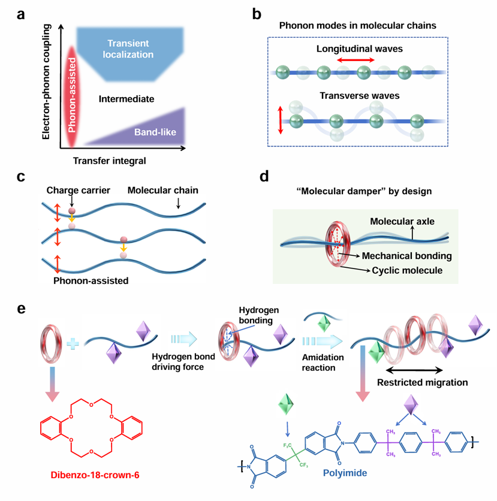
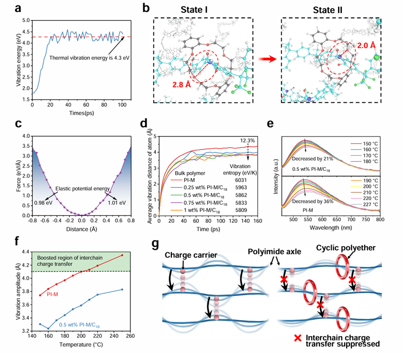
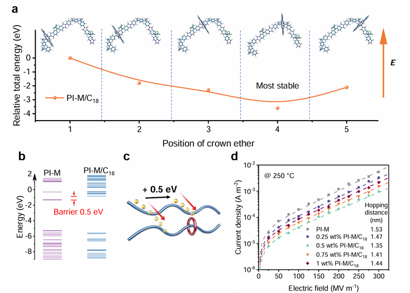
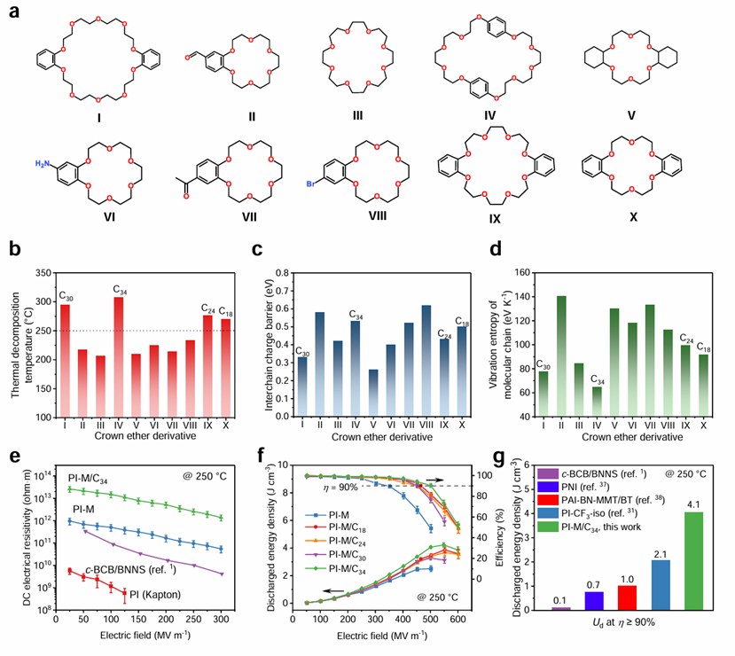
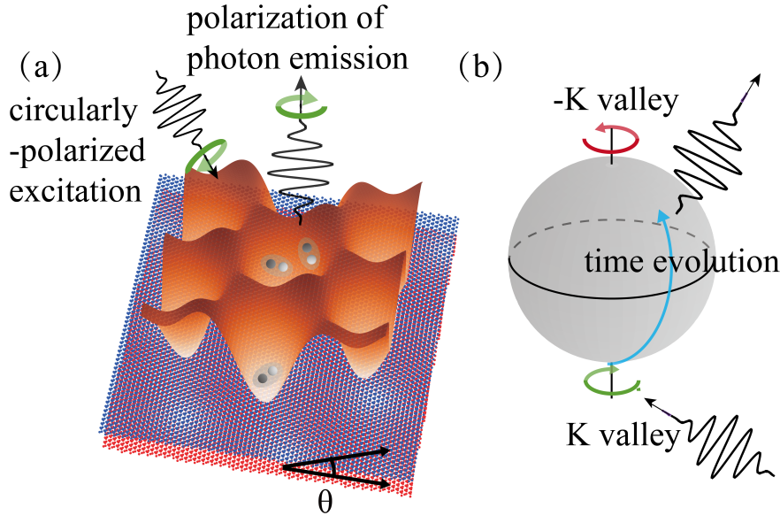
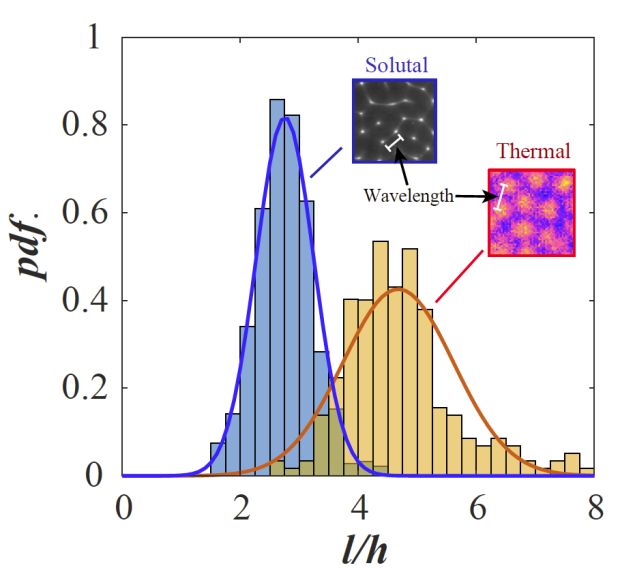
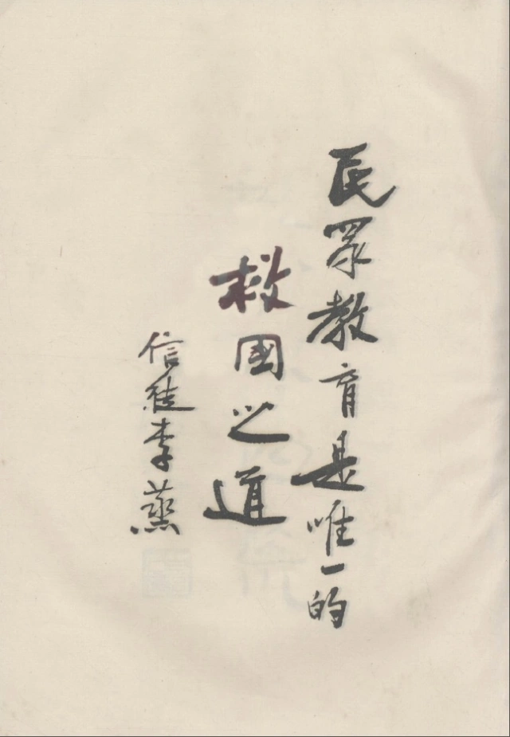

物理学院奚啸翔团队发现反常金属态中超导涨落的谱学证据
近日，南京大学物理学院奚啸翔课题组在二维超导体衍生反常金属态的研究方面取得了重要进展。团队结合...


近日，南京大学物理学院奚啸翔课题组在二维超导体衍生反常金属态的研究方面取得了重要进展。团队结合...

南京大学物理学院王慧田、汪喜林研究组在窄线宽纠缠源研究中取得重要进展。突破了腔增强纠缠源制备中的...

章提出了一个开创性的跨学科领域——认知神经地理学，该领域以地理学和认知神经科学的理论与方法为基础...

在复杂网络中，隔离特定节点以防止有害影响的传播是网络科学领域的一个长期难题。无论是疾病传播、级联故障，还是自然灾害的蔓延...
清华新闻网2月17日电介电高分子是电绝缘、功率型电能存储等关键核心技术领域不可或缺的基础材料。随着电气设备和电子器件功率持续增长以及应用场景不断拓展，介电高分子材料正面临着更为严苛的高温、高电场运行工况要求。尽管使用宽能带隙、高耐热介电高分子能够提升温度性能，但当温度上升至200°C以上并同时施加强电场，这类材料的电阻率和介电储能性能均大幅下降。基于现有介电高分子中电荷传导理论和抑制方法无法突破材料耐温性能与绝缘性能之间的矛盾。
2月14日，清华大学电机系李琦课题组在《自然·材料》（Nature Materials）在线发表题为“具有机械键的高温储能介电聚合物”（Dielectric polymers with mechanical bonds for high-temperature capacitive energy storage）的研究论文。研究揭示了介电高分子在极端高温、高电场下的电荷传导机制，并采用超分子化学方法构建了一类具有“分子阻尼器”效应的新型聚轮烷型介电高分子材料，实现极端工况下高绝缘和高效介电储能。
图1.电荷转移机制以及超分子化学拓扑结构设计
课题组通过对多种耐热介电高分子材料进行荧光发射光谱研究发现，当温度升至200°C以上区间时，分子链内电荷传导变化不大，但分子链间电荷传导显著增加，并且电荷转移机制是以隧穿为主导，而不是典型的能带传输。由此，课题组提出，在此条件下介电高分子中的电荷传导机制主要为声子辅助的链间电荷隧穿。在无序、本征低电导体系中，声子对载流子的作用不再是阻碍传输，而是增强电导（electron-phonon coupling），声子辅助电荷转移不受能带隙宽度影响，并强烈依赖于温度相关的分子链局部振动。这一物理机制在此前的耐高温介电高分子研究中被忽略，这也解释了此前开发的高耐热、宽能带隙介电高分子在极端工况下不具有高绝缘性的根本原因。
进一步，课题组为了限制声子辅助的链间电荷隧穿，利用超分子化学方法将冠醚类环形分子穿套在线形的聚酰亚胺分子链上，形成具有聚轮烷结构的介电高分子。第一性原理计算和分子动力学模拟结果显示，冠醚类环形分子和聚酰亚胺分子链之间形成的机械键能够将振动能转变为弹性势能，从而抑制高温下聚合物分子链的局部振动和声子辅助链间电荷转移。这种“分子阻尼器”使得这类具有聚轮烷结构的介电高分子在极端高温、高电场下能够克服主要电导机制。
图2.分子链振动的分子动力学计算以及荧光光谱测试
分子动力学模拟和实验结果表明，冠醚类小分子倾向于位于分子链的拐点处（电荷转移薄弱处），并与聚合物分子链之间形成链间势垒，进一步限制电荷输运。通过对十种冠醚类小分子以耐高温、高链间电荷势垒以及低分子链振动熵为原则进行筛选，挑选出最佳的冠醚结构。最优分子拓扑结构聚合物在250°C极端温度下的绝缘电阻率比商业化耐热介电高分子高四个数量级以上，放电能量密度高达4.1J/cm3，充放电效率高于90%。这类材料的应用将有助于突破传统电气设备和电子器件的工作温度和功率上限，大幅降低热管理成本。
图3.电荷转移行为和电荷传导机制
图4.冠醚分子结构的筛选以及高温介电储能性能
清华大学电机系李琦副教授为论文通讯作者，博士后王瑞为论文第一作者，博士生朱雨杰为论文共同第一作者。研究得到国家自然科学基金项目的支持。
论文链接：
https://www.nature.com/articles/s41563-025-02130-z
供稿：电机系
编辑：李华山
审核：郭玲
$$ \begin{cases} y''+p(x)y'+q(x)y&=f(x)\\ y''+p(x)y'+q(x)y&=0 \end{cases} $$
$$ \begin{cases} x=\psi(p,c),\\ y=f(\psi(p,c),p), \end{cases} $$
其中，$\psi(p,c)$为参数方程，$f(\psi(p,c),p)$为隐函数。$\frac{1}{p}=\frac{\partial f}{\partial y}+\frac{\partial f}{\partial p}\frac{dp}{dy}$这是关于$y,p$的一阶微分方程
$$ y=x^\alpha\displaystyle\sum_{n=m}^\infty a_nx^n=x^{\alpha+m}\displaystyle\sum_{k=0}^\infty a_{m+n}x^k $$
清华新闻网2月17日电 清华新闻网2月17日电 作为轨迹规划和最优控制领域的经典理论问题，高阶积分链系统在全状态约束下的时间最优控制受到广泛研究，并在集成电路制造、机器人、数控等方面具有重要意义。已有研究通常认为，时间最优轨迹为分段多项式表征的“S型轨迹”，即给定初始状态出发，在最短时间内到达最大匀速阶段，随后保持最大速度，在接近终点时在最短时间内从最大速度状态转移至给定终端状态。通过构造这种S型轨迹，目前已有方法能够求得三阶及以下问题的最优解；延续S型轨迹的思路进行深入研究，能够实现四阶及以上问题的近优解，而求取四阶及以上问题的严格最优解仍是国际理论难题。
近日，清华大学机械系胡楚雄教授课题组发现并证明了四阶及以上高阶积分链系统框约束下时间最优轨迹中颤振（chattering）的存在性，并给出了全状态约束下的四阶问题严格最优解，其中颤振是指最优控制问题数学本质诱导的最优控制量在有限时间内切换无穷多次。研究指出，此前广泛认为的时间最优、切换次数有限的S型轨迹中，最大匀速阶段两端的加速度、加加速度等各阶导为零，这导致其高阶惯性未能被充分利用，阻碍了轨迹时间的进一步优化。该研究证明了严格的最优轨迹含有颤振特征，由总时间有限的无穷多段多项式分段组成，利用无穷多次切换来避免高阶惯性的浪费，保证严格的理论时间最优性。此外，研究工作建立了全状态约束下积分链系统时间最优控制的专用颤振理论工具，克服了所研究问题中Hamilton量无穷阶奇异导致的Lagrange流形等经典颤振工具难以直接应用的困难。研究挑战了传统“切换次数有限的S型轨迹具备时间最优性”的认知并提出了新的理论诠释，有助于在高轨迹光滑性和跟踪精度的工业场景下提升工艺效率。
$$ \int_0^t e^{-4t}\cos{5s}ds=\frac{e^{-4t}}{16+25}(-4\cos{5s}+5\sin{5s})\Big\vert_{s=0}^{s=t} $$
$$ R-CHO+O_2+NADH+H^+\xrightarrow{CYP}R-COOH+H_2O+NAD^+ $$
\begin{pmatrix} S_1&\cdots&S_{N_1}\\ a_{1,1}&\cdots&a_{N_1,1}&\cdots&a_{1,N}&\cdots&a_{N_1,N}\\ b_{1,1}&\cdots&b_{N_1,1}&\cdots&b_{1,N}&\cdots&b_{N_1,N} \end{pmatrix}
清华新闻网2月13日电 液体薄膜蒸发过程广泛存在于微电子封装、材料表面镀膜等工业领域中，对最终产品质量至关重要。蒸发过程中，液膜内部会自发形成温度和溶质浓度梯度，进一步会引起温度和溶质马兰戈尼效应（Marangoni effect），极大影响液膜蒸发过程。但这两种效应引发的双重不稳定性机制及其对沉积形貌的动态调控规律尚未明确，制约了高精度涂层工艺的优化。
近期，清华大学能动系孙超课题组与荷兰特温特大学德特勒夫·洛斯（Detlef Lohse）教授合作，以水-乙醇-茴香油三元混溶体系为研究对象，通过高精度热成像与光学观测技术，同时观察到温度马兰戈尼效应形成的微米级热对流胞与毫米级油滴析出的多边形图案。结合多尺度数值模拟，团队量化了表面张力梯度中温度与浓度贡献的竞争关系，结果表明热效应在蒸发初期主导界面失稳，而溶质效应则随液膜内溶质扩散而逐渐增强。基于此，团队提出了热-溶质双重马兰戈尼效应分阶段主导的理论判据。进一步，通过调控蒸发速率与油滴析出临界时间阈值，可以实现对微滴图案特征波长的主动控制。
课题组通过图1A所示实验装置观察多组分液膜在蒸发过程中的动态行为。在液膜蒸发初期和中期，可分别从红外相机和光学相机中观察到液膜表面出现蜂窝状热对流图案（图1B）和多边形的油滴析出图案（图1F）。这两类图案特征波长的差异（图2）表明，液膜蒸发过程中存在两种不稳定性机制：热不稳定性（thermal instability）和溶质不稳定性（solutal instability）。
为了深入分析两种不稳定性机制的竞争关系，课题组通过数值模拟定量比较了热马兰戈尼效应和溶质马兰戈尼效应在表面张力中的贡献。数值模拟结果揭示了两种机制在蒸发过程中的动态转换：热马兰戈尼效应在初期主导对流模式，而溶质马兰戈尼效应随着液膜内的溶质扩散过程逐渐占据主导地位（图3）。这一发现不仅解释了实验中观察到的图案波长差异，还为理解多组分液膜蒸发过程中的复杂流体动力学提供了理论支持。
| 样品 | 比表面积$(m^2/g)$ | 孔容$(cm^3/g)$ | 平均孔径$(nm)$ |
|---|---|---|---|
| $CS$ | 1.353 | 0.0091 | 25.899 |
| $HTC-180$ | 8.734 | 0.0421 | 18.409 |
| $HTC-200$ | 13.354 | 0.0620 | 17.743 |
| $HTC-220$ | 16.870 | 0.0773 | 17.512 |
| $HTC-240$ | 17.630 | 0.0981 | 21.073 |
| $TFC-180$ | 1.424 | 0.0105 | 22.846 |
| $TFC-200$ | 1.517 | 0.0116 | 28.678 |
| $TFC-220$ | 1.611 | 0.0120 | 32.112 |
表1.玉米秸秆及其烘焙炭的比表面积、孔径、孔体积
据统计，在基本饮用水服务普及率低于80%的64个国家中，太阳能平均辐照度为5.59 kWh/m2/day，大大超过了全球平均水平。这一优势为发展太阳能驱动的光催化消毒技术提供了机会。光催化技术通常依赖于光生活性氧物种 (ROS) 攻击细菌细胞膜和DNA等细胞内成分。然而，细菌自身具有损伤修复系统，如DNA修复过程（SOS响应），可以有效抵抗ROS的压力。这种抗性在天然水体中处于静止生长后期的细菌中表现得尤为明显。该生长阶段的细菌通常处于饥饿状态，并在适应饥饿后会增强对ROS和其它环境压力的耐受性，因此，被称为压力抗性细菌。光催化消毒技术的固有挑战在于：（1）去除实际水体中高抗性细菌的效率低，（2）粉末态光催化剂的回收困难。为了解决以上问题，北京师范大学环境学院教授李阳团队在《Nature Communications》上发表了创新性研究。
图5.莫尔材料中的激子示意图
提出了一种新型漂浮整体光催化剂体系，由银单原子 (AgSA) 和银纳米颗粒 (AgNP) 同步负载于整体ZIF-8-NH2载体上，命名为AgSA+NP/ZIF。AgSA+NP/ZIF可以像片剂一样投入水体进行消毒，即便于进行回收，又能实现重复利用。在自然光照射下，AgSA+NP/ZIF的光热效应与光生ROS协同作用，能够有效灭活营养贫乏地表水中的高抗性细菌。
图6.实验装置示意图及蒸发过程主要现象
光催化剂载体由3D三聚氰胺海绵和整体的ZIF-8-NH2层组成。通过X射线衍射、扫描电子显微镜、透射电子显微镜等技术，研究团队对该材料的结构进行了详细表征。球差电镜和X射线吸收精细结构谱显示，银单原子在ZIF-8-NH2上均匀分布，与N元素形成了Ag-N配位结构，同时平均尺寸为13.1 nm的银纳米颗粒也被同步负载。
李蒸（1895—1975），1930年开始执掌北平师范大学，1945年卸任西北师范学院院长，是新中国成立以前北京师范大学历任校长中任职时间最长的一位。李蒸早年毕业于北京高等师范学校，后留学美国哥伦比亚大学，曾任南京国民政府教育部社会教育司司长等职，是1949年南京政府北平和谈的代表团成员。新中国成立后，曾任政务院参事、全国政协委员等职。李蒸是中国高等师范教育独立建制的坚定维护者、中国现代民众教育的开拓者，是全面抗日战争时期北京师范大学西迁陕甘办学的掌舵人。他以“民族之托命在教育”的强烈使命感，立足并深耕师范教育园地，将北京师范大学的办学精神和追求拓展于西北大地，为国家师范教育、民众教育、西北地区教育事业的发展做出了贡献。
民族之托命在教育。李蒸是民国时期教育救国的代表人物之一。九一八事变之后，东北沦陷，华北危机，国难日益深重。李蒸经过长时期的观察思索，认定“只有走教育这条路方能救国”。对于如何实现教育救国，他主张最关键的是在教育的各个阶段以及实施教育的不同方式（学校教育、社会教育）中，“都要一贯的以‘养成国家观念’与‘培养民族意识’为主旨”。李蒸强调，国难时期，“民族之托命在教育，教育之本源在师范学生”，北平师范大学学生“当以民族存亡之责，肩诸一身，更以身作则，使全国男女儿童及青年，起而负荷此艰巨之责任，涵养其情感，锻炼其意志，鼓舞其大无畏之精神，为民族生存而牺牲奋斗”。李蒸注重培养学生的爱国主义精神，学校西迁陕甘办学时期，他在每次纪念周的周会演说中，都会阐明中国抗战必胜、日本必败的道理，以坚定师生抗日的信心和决心。民众教育是李蒸实现教育救国的重要途径，在哥伦比亚大学就读期间，他曾赴美国中南部参观和考察乡村学校。学成回国后，他基于对中国国情的分析，确信民众教育“乃中国唯一之出路”，主张“师范学校应兼办社会教育，使学校和社会打成一片，以改造社会”。在李蒸的领导下，学校先后在北平设立乡村教育实验区、在城固成立乡村社会教育施教区、在兰州开办国民教育实验区。他引导学生积极参与到民众教育中来，并希望以此实现发动民众抗战救国的志愿，“如果不能赴前线杀敌，就应当尽自己最大的责任与能力在后方服务以增进国家的抗战的力量，而服务的方式以兼办社会教育为最简单易行，这也是大学同人报国的最好机会”。
图7.李蒸题词：民众教育是唯一的救国之道
师范大学要办出自己的特色。 李蒸是民国时期师范教育专业化的坚定支持者，认为师范教育在整个国民教育体系中居于重要地位，强调“师范教育乃是一切教育之母”。上世纪20年代以来，针对当时教育界所存在的各类取消师范院校独立设置的言论，李蒸在多种场合为师范院校呼吁。他认为，虽然普通大学也可以研究一切理论的和实际的学术，但是“教育化的教师只有在专设的师范教育机关中才能产生”。20世纪30年代，受经费困难、教育界派系斗争等因素的影响，高等师范院校遇到了严重的办学危机。1932年，南京国民政府教育部下达要求北平师范大学停止招生的训令，国民党中央组织委员会提案“停办师范大学”。李蒸与全校师生、校友据理力争，开展各种形式的护校运动，最终使得处于风雨飘摇之中的北平师范大学得以保存。与此同时，北平师范大学也开始调整办学定位，开展校务整理工作，力求办出师范大学的特色，以突出普通大学无法取代的方面。为此，学校成立了“校务整理委员会”，制定了《国立北平师范大学整理计划书》，重新修订了《国立北平师范大学组织大纲》和《国立北平师范大学学则》。规定北平师范大学的办学宗旨为：“以造就中等学校与师范学校师资为主，并以造就教育行政人员，及研究教育学术与适用于教育之专门学术为辅。”校务整理期间，北平师范大学在院系设置、管理体制、课程设置等方面都进行了改革，聘请国内一流专家学者到校任教，对学生入学和学习制定了严格的标准。学校在经费困难的情况下进行了校舍、设备、图书等扩充建设。李蒸所领导的校务整理工作取得了显著的成效。据1936年统计，北平师范大学历届毕业生80%以上服务于教育界，他们大多数人“能以教育为终身事业，卓然有所建树”。在李蒸的带领和全校师生的共同努力下，北平师范大学成为与北京大学、清华大学齐名的北平三大高等学府之一。